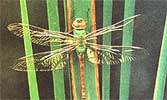
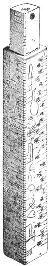

Big Dog And The Dog Star
August/September 1995
SEASONS
The brightest stars in the constellation accompany the sun into summer's mythic dog days.
By Fred Schaaf
Photo: Michael Lustbader/Photo Researchers; Color Illustration: Jamie Leo
What are the "dog days" (also called the cc canicular days;' which means the same thing)? Most people know that they are supposed to be hot and humid days of summer. Some folks would venture to guess that they occur in August, the month with the greatest reputation for humidity. And many people believe that these muggy, sultry days get their name from the idea that dogs can go mad under such meteo rological conditions.
The truth about the name and the exact timing of the dog days is far more complex and interesting. The dog days are actually named after the Dog Star, the brightest star in the constellation Canis Major-the Big Dog-and by far brightest star in all the heavens. The Dog Star is more properly known as Sirius (pronounced like "serious"), a name from ancient Greek which apparently means some thing like "scorching." But Sirius is visible in the night sky in winter. What would it have to do with the dog days of summer? A star that is in the sky on winter nights is also in the sky on summer days. Of course, even Sirius is not bright enough to be spotted readily with the naked eye in the midst of broad daylight. But ancient skywatchers were able to figure out that Sirius must be accompanying the sun across the daytime sky in the summer. And apparently as far back as hundreds of years before Christ, one explanation of summer's heat was that brilliant Sirius was adding extra warmth to that of the sun at this time of year.
No one is quite sure which exact dates should mark the start and end of the dog days. Should the central date of the period be when the sun is passing due north of Sirius or when they rise at the same time? The former occurs on July 2, whatever the observer's latitude-but only in our part of history. The latter-when the sun and Sirius rise together depends on your latitude. From 40 degrees north latitude (Philadelphia, Denver, San Francisco) the sun and Sirius come up together on August 4 and by August 15 Sirius rises a full hour before the sun. (From 30 degrees, it's about a week earlier.)
In light of the complexity of the situation and the vagueness of how close the sun and Sirius have to be for them to supposedly combine heat, it's not surprising to hear that many dates have been suggested for the dog days. One tradition has them occurring from July 3 to August 11. But other lore authorities claim they begin later (even as late as July 30) and the duration claimed for them ranges from about four to six weeks.
Fantastical Dragonflies
At one time or another, most of us have seen a dragonfly and marveled at it: hovering or darting near us, it looks like a brightly colored needle with big whirring wings. Perhaps we should not be surprised to learn that so fanciful-looking a creature really does have a strange life and abilities.
Two questions often asked about dragonflies are whether they bite or sting people and whether they have any practical benefits for humanity. The answers are No and Yes. Dragonflies, and their generally smaller, more fragile relatives the damselflies, can't sting and are not known to bite people. They do have jaws, however, and they are quite voracious in their use of them to bite and eat a variety of other insects-including mosquitoes and flies, which human beings consider pests. Which of course answers the second question: Yes, dragonflies are quite beneficial to us by eliminating large numbers of insects that we find undesirable. In flight, they actually grab bugs and collect them in their curve-dunder legs, as if in a bucket.
Dragonflies lay eggs near or in the water and in their early, nymph stages feed on aquatic creatures and breathe with gills-until the time comes and the adult dragonfly bursts forth from its shell. You may have noticed large numbers of dragonflies in August, darting back and forth over a field after flies and mosquitoes. Is this a concentration of the dragonflies that live around the neighborhood? No. These impressive displays of dozens or hundreds of dragonflies are groups from far away pausing to feed during migration. Some of the larger kinds of dragonfly do migrate-not thousands of miles as is common for birds, but at least hundreds of miles.
Dragonflies can be distinguished from damselflies because they rest with wings outstretched while most damselflies rest with wings folded. Both varieties have four thin, transparent, many-veined wings.
By far the most common and conspicuous dragonfly is the green darner. This, fast, green-bodied dragonfly is most common in the East but can be found almost anywhere in North America that there is sufficient water.
Green darners can have bodies over three inches long and a wingspan up to about four inches across. But dragonflies are ancient insects-fossil remains date back to 250-300 million years ago-and some of the early varieties were enormous. In the fossil record are dragonflies with two and a half-foot wingspans!
Saturn's Razor-Thin Rings
In August, the rings of Saturn turn sideways-"edgewise"-to Earth for a second amazing time. But unlike in May, this time the sunlit face of them bursts into view and the planet soon after makes its closest approach of the year.
Getting a good view of Saturn's rings these next few months is tricky (much depends on having a good telescope and a night of steady atmosphere up on high). But if you like astronomy at all you should make the effort to see this. Not for over 40 years will similar views be visible! If you don't have even a small telescope of your own, seek out the public night of the nearest planetarium or amateur astronomy club (a huge listing of planetarium and club addresses and phone numbers can be found in the September issue of Sky & Telescope magazine, which should be available at newsstands and libraries by the time you read this).
What will you see under excellent conditions through a superb telescope? Until August 10, an oddly flattened yellow globe with one or two thin dark lines across it (the darkened, nearly edge-on rings and their shadow). Then, in the weeks after that date, the rings slowly come back into light and into enough tilt to become visible first as a needle, then as a thicker line of light. You may see moons of Saturn as little star-like beads lining up on that needle or string of radiance.
 Photo: Michael Lustbader/Photo Researchers; Color Illustration: Jamie Leo |
 |
 |